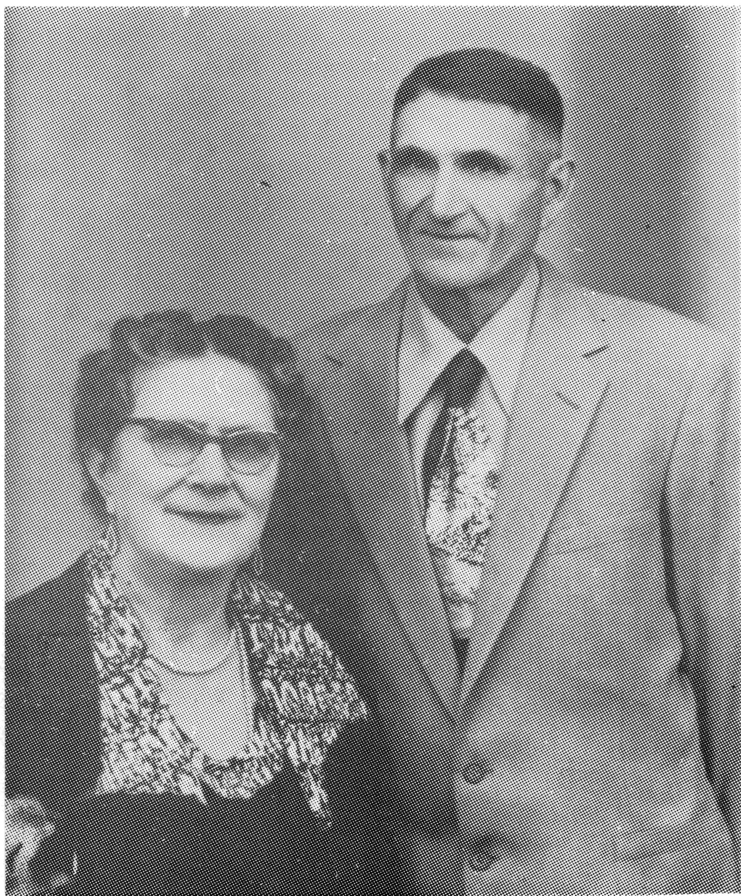

JOE (JOSEPH) L'HEUREUX
Joe was born in 1892 on the S.E. 1/4 of Sec. 22, Twp. 48 Rge. 17 at Jackfish Lake. His parents were Sophie Pichette and Moise L'Heureux.
In 1914, Joe married Eva Carriere and built his first home on the S.E. 1/4 of Sec. 23, Twp. 48, Rge 17 where today L'Heureux Road meets Highway No.4. This location is one and one half miles east of the present ranch, which was then called the Horse Shoe Ranch. Two sons, Fernand and Ernest, were born there. Joe fed cattle for his Dad in the winter and looked after them in the summer, as there was no farm land culitvated at that time.
When the war started in 1914, the price of wheat rose, so he took a homestead on the N.E. 1/4 of Sec. 16, Twp. 48, Rge. 17, a mile east of the present Jackfish Post Office. He moved a house, which had been built on the Ranch, onto this land. That little log house is still standing today.

The first winter that he moved on to his homestead, things were pretty slow, so he hired himself out to the Arcand brothers, Eugene and Phillip. Joe fed the cattle and looked after the men while Eva did the cooking.
In the spring of 1918 they returned to the homestead and started proving it. Time improved during the next few years. After the war, wheat sold at $2.25 a bushel. During the '20's, Joe rented more land from his neighbors until he had six quarters with approximately 300 culitvated acres.
He had a fair crop in 1927, so Joe bought a Model T Ford for $500.00. In 1928, the crop froze and what was left was hailed out so there was lots of feed and not much crop money.
Hard times hit in 1930 and from then on it was a down-hill go; dry weather, no crops and sickness. Five girls were born by this time. Joe struggled for fifteen years. But in the meantime, there was fishing to make a dollar with, so every winter, we'd get the nets untangled, box them, then put them throught the ice. In 1927, Joe's brother, Paul came to visit from the Red Pheasant Reserve. He had met some fisherman with a jigger, and took the pattern from it. So after that, the fishing was very simple. In 1928, a man came to Meota to buy fish, so Joe took his catch to him and got enough to buy a new cutter. To keep his catch of fish from freezing, he had a few 45 gallon gas drums in his bobsleigh box. These he filled with water and threw his catch into them. The price was much better if the fish had not been frozen. In later years, cabooses were used and the wood stoves in these would keep the fish fresh plus dry out any clothes which might get damp during fishing.
It wasn't long before word got out about the nice fresh fish to be bought on Jackfish Lake. More buyers came in. One morning, the price was 10 cents per pound and by that night, the price had risen to 36 cents per pound which shows what a little competition will do.
A year later, Joe built a couple of shacks at the north end of Jackfish Lake, and started buying fish under contract, which had to be taken to the train every night, often delaying his return home until late at night. He also went to Peter Pond and Montreal Lake for a couple of winters to fish for Joe Pirot.
In 1945, he held an Auction Sale on the farm and bought a little store in Jackfish, which had been built by Alderic Lauzon three years previous. From then on, things started looking better. He had kept a team of horses to haul his freight from Meota. People would see the light in his window pretty early on Friday mornings as he prepared to meet the train in Meota, winter and summer alike. Some winter days were bitterly cold but he had a big caboose with a stove, so he was in heaven. He also served as Councilor for seven years, from 1945 until 1952.
In 1962, his youngest daughter, Beulah, married Rolland Corbeil. The following year, he sold them the store and retired after 17 years.
Joe and Eva continued to live in Jackfish after he retired and the door to their home was open to many friends and relatives from near and far. Eva had not been well since a goitre operation in 1930, and she continued as a victim of this until she died in 1979.
Joe attended mass daily and sang Low Mass. The Parish Priest enjoyed many a meal at Joe's and former Priests always returned to visit with him.
Joe L'Heureux
| NAME | BORN | MARRIED | SPOUSE | BOY | GIRL | DIED |
|---|---|---|---|---|---|---|
| Joe | May 23, 1892 | Oct. 6, 1914 | Eva Carriere | 2 | 5 | May 21, 1985 |
| Eva | July 8, 1977 | |||||
| JOE'S FAMILY | ||||||
| Fernand | July 3, 1915 | Oct. 20, 1938 | Corrine Regnier | 1 | 1 | |
| Corrine | Dec. 12, 1942 | |||||
| Remarried | Myrtle Nault | 1 | 2 | |||
| Ernest | Oct. 15, 1916 | Oct. 28, 1940 | Corrine Comeau | 5 | 2 | |
| Noella | Dec. 22, 1919 | Feb. 7, 1942 | Irvine Byhre | 0 | 1 | |
| Laurette | Feb. 28, 1922 | Jan. 26, 1942 | Peter Lavoie | 3 | 2 | |
| Gladys | Aug. 16, 1926 | Aug. 16, 1947 | Harry Thompson | 2 | 1 | |
| Lorrainne | Apr. 5, 1928 | Oct. 6, 1949 | Clem Bru | 1 | 5 | |
| Beulah | Jan. 12, 1934 | June 8, 1961 | Rolland Corbeil | 2 | ||
| Joe's Grandchildren | ||||||
| FERNAND'S FAMILY | ||||||
| Fernande | Nov. 12, 1939 | June 8, 1961 | Ray Swistun | 1 | 2 | |
| Gerald | Dec. 15, 1940 | Oct. 24, 1963 | Lorette Bec | 1 | 2 | |
| Daniel | July 28, 1944 | June 30, 1967 | Shirley Nicols | 1 | 1 | |
| Lillianne | July 29, 1945 | Nov. 12, 1966 | Bruce Andrews | 1 | 0 | |
| Lynn | May 18, 1951 | Sept. 27, 1974 | Peter Wornock | 0 | 2 | |
| Joe's Great Grandchildren | ||||||
| Fernand's Grandchildren | ||||||
| FERNANDE'S FAMILY | ||||||
| Dale | Feb. 27, 1964 | |||||
| Lorrie | Jan. 28, 1967 | |||||
| Kim | Nov. 20, 1968 | |||||
| GERALD'S FAMILY | ||||||
| Collette | Oct. 9, 1964 | Apr. , 1984 | ||||
| Paula | Dec. 29, 1965 | |||||
| Dwight | May 3, 1969 | |||||
| DANNY'S FAMILY | ||||||
| Candace | Apr. 7, 1968 | |||||
| Jason | Aug. 26, 1970 | |||||
| LILLIANNE'S FAMILY | ||||||
| Dax | Jan. 9, 1970 | |||||
| LYNN'S FAMILY | ||||||
| Dawn | July 21, 1977 | |||||
| Robyn | July 19, 1979 | |||||
| Joe's Grandchildren | ||||||
| ERNEST'S FAMILY | ||||||
| Leandre | Oct. 3, 1942 | Dec. , 1981 | Pat Germann | 1 | 0 | |
| Guy | Feb. 3, 1947 | Mar. , 1975 | Louise Hird | 0 | 2 | |
| Real | May 18, 1948 | May , 1968 | Sonna Roskawich | 1 | 2 | |
| Leodale | Oct. 13, 1949 | Dec. , 1971 | Laretta Dowaniuk | 2 | 0 | |
| Cheryl | Aug. 12, 1952 | July , 1971 | Wayne Kruger | 0 | 2 | |
| Marc | Dec. 21, 1958 | |||||
| Julie | Nov. 14, 1963 | |||||
| Joe's Great Grandchildren | ||||||
| Ernest's Grandchildren | ||||||
| LEANDRE'S FAMILY | ||||||
| Joey | July , 1983 | |||||
| GUY'S FAMILY | ||||||
| Suzette | Mar. , 1977 | |||||
| Allison | Oct. , 1979 | |||||
| REAL'S FAMILY | ||||||
| Shawna | May , 1970 | |||||
| Monica | May , 1973 | |||||
| Chance | June , 1976 | |||||
| LEODALE'S FAMILY | ||||||
| Shawn | Mar. , 1972 | |||||
| Brent | Apr. , 1974 | |||||
| CHERYL'S FAMILY | ||||||
| Samantha | Mar. , 1974 | |||||
| Nicole | Apr. , 1976 | |||||
| Joe's Grandchildren | ||||||
| NOELLA'S FAMILY | ||||||
| Karen | Sept. 19, 1942 | May 9, 1960 | Jack Hampton | 1 | 1 | |
| Joe's Great Grandchildren | ||||||
| Noella's Grandchildren | ||||||
| KAREN'S FAMILY | ||||||
| Byron | Nov. 26, 1960 | |||||
| Kimberly | Oct. 14, 1964 | |||||
| Joe's Grandchildren | ||||||
| LAURETTE'S FAMILY | ||||||
| Roger | Dec. 6, 1942 | Mar. 4, 1967 | Sharon Thorarenson | 2 | 0 | |
| Loyd | Mar. 8, 1948 | June 6, 1948 | ||||
| Marlene | Aug. 8, 1949 | June 26, 1971 | Bill Sterling | 2 | 0 | |
| Denis | Apr. 26, 1952 | |||||
| Marie | Dec. 4, 1956 | Mar. 6, 1957 | ||||
| Joe's Great Grandchildren | ||||||
| Laurette's Grandchildren | ||||||
| ROGER'S FAMILY | ||||||
| Bruce | Apr. 2, 1968 | |||||
| Mark | Oct. 14, 1973 | |||||
| MARLENE'S FAMILY | ||||||
| Christopher | May 12, 1975 | |||||
| Michael | May 1, 1977 | |||||
| Joe's Grandchildren | ||||||
| GLADYS' FAMILY | ||||||
| Ronnie | May 11, 1949 | June 12, 1961 | ||||
| Allan | Sept. 27, 1951 | Oct. 23, 1972 | Cheryl Piatocha | 1 | 1 | |
| Kelly | May 6, 1969 | |||||
| Joe's Great Grandchildren | ||||||
| Gladys' Grandchildren | ||||||
| ALLAN'S FAMILY | ||||||
| Summer | Sept. 14, 1975 | |||||
| Joey | Oct. 23, 1980 | |||||
| Joe's Grandchildren | ||||||
| LORRAINNE'S FAMILY | ||||||
| Julliette | Nov. 16, 1950 | Jan. 12, 1972 | Murray Cooney | 1 | 1 | |
| Carmen | July 15, 1952 | May 23, 1972 | Rory Porter | 1 | 1 | |
| Ernest | Feb. 4, 1954 | |||||
| Theresa | Apr. 16, 1956 | |||||
| Susan | Dec. 1, 1957 | |||||
| Corrinne | July 8, 1965 | |||||
| Joe's Great Grandchildren | ||||||
| Lorrainne's Grandchildren | ||||||
| JULLIETTE'S FAMILY | ||||||
| Nicole | May 3, 1972 | |||||
| Chad | Aug. 5, 1973 | |||||
| CARMEN'S FAMILY | ||||||
| Mason | Apr. 12, 1978 | |||||
| Nadine | Nov. 6, 1980 | |||||
| Joe's Grandchildren | ||||||
| BEULAH'S FAMILY | ||||||
| Blair (adpt) | Mar. 1, 1964 | Oct. 6, 1983 | Erna McCullough | 1 | 1 | |
| Marcel (adpt) | Nov. 9, 1965 | |||||
| Joe's Great Grandchildren | ||||||
| Beulah's Grandchildren | ||||||
| BLAIR'S FAMILY | ||||||
| Chandler | Nov. 15, 1983 | |||||
| Jessica | June 15, 1985 | |||||
| TOTAL DESCENDANTS | 100 |
| LIVING | 94 |
| DECEASED | 6 |